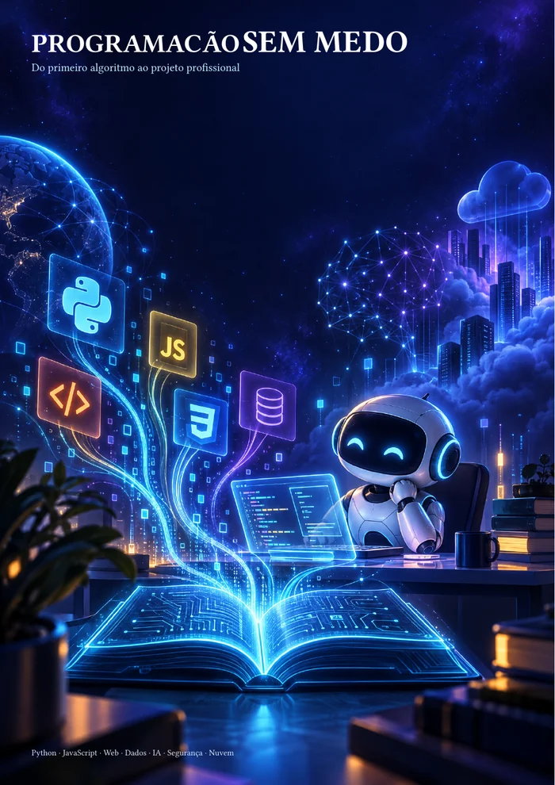

Base que sustenta
→Pare de decorar. Aprenda a pensar em código.
Fundamentos, variáveis, condições, funções, testes e decomposição para você entender por que o código funciona — e não apenas copiar a sintaxe.
Um e-book direto ao ponto para você sair da confusão dos tutoriais, entender a lógica por trás da programação e começar a construir projetos que fazem sentido.
Uma trilha, não mais um tutorial.
Leitura + prática + projetos + revisão.

Um programa que você consegue explicar é mais valioso do que um programa que apenas funciona por acaso.— Regra de ouro do e-book
Você não precisa memorizar todas as linguagens ao mesmo tempo. Precisa de uma sequência que faça as peças se encaixarem.
Fundamentos, variáveis, condições, funções, testes e decomposição para você entender por que o código funciona — e não apenas copiar a sintaxe.
Uma visão conectada de Python, JavaScript, HTML, CSS, SQL, APIs, back-end, dados, inteligência artificial, nuvem e IoT.
Quatro projetos integradores, exame com gabarito e um plano de 12 semanas para transformar estudo solto em portfólio publicável.
Do primeiro if à construção de uma API segura. Do dado bruto ao portfólio que você consegue explicar em uma entrevista.
automação, dados e serviços
HTML, CSS, JavaScript e APIs
SQL, visualização e pipelines
modelos, DevOps e IoT
ameaças, defesa e boas práticas
portfólio e comunicação técnica
O conteúdo foi escrito para ser usado como curso, manual de consulta e caderno de exercícios.
É por isso que o e-book não termina no conceito. Ele te leva da ideia ao teste, do teste ao projeto e do projeto à explicação.
Você não precisa saber tudo para começar. Precisa começar pequeno, observar o resultado e continuar melhorando.
Um e-book completo em PDF para organizar sua jornada de estudos, com pagamento único via Pix e envio do arquivo após a confirmação.
Produto em PDF. Após a confirmação do Pix, o arquivo é enviado pelo WhatsApp.
Sua mensagem foi preparada. Confira o WhatsApp para receber a chave Pix. Após a confirmação, o PDF será enviado.
Se ainda restar alguma, o WhatsApp está logo ali.
Não. A trilha começa no primeiro algoritmo e evolui até projetos profissionais. O e-book foi pensado para leitura, execução de exemplos, exercícios e consulta.
A proposta não é decorar tudo. É construir uma base transferível e, depois, comparar como diferentes ecossistemas expressam as mesmas ideias.
O botão abre uma conversa no WhatsApp com seus dados e o pedido já preenchidos. Você recebe a chave Pix e, após a confirmação do pagamento, o PDF é enviado pelo vendedor.
Não. Além dos conceitos, há exemplos, exercícios, exame com gabarito, plano de 12 semanas e quatro projetos integradores para colocar a mão no código.
Comece pequeno. Observe. Explique. Continue melhorando.